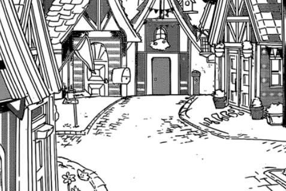
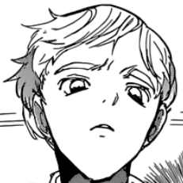
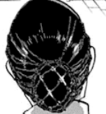

You dash faster than before to reach the flower, remembering the reason you were entrusted with the journey in the first place - to save 'father' with the vial.
Following the line, you reach Nicholas's cottage earlier than expected. You enter within but not a soul to be seen. You wander around the familiar cottage. You came here once when you were seven while mother and father were out looking for a new place to live. Nicholas taught you all the secrets to the house back then. Like the slim passage way to the side of the house that only you could fit in.
"He's probably in the basement then..."
You head down the creaky, dark oaked stairs and reach the dusty basement. Looking around, it was almost empty except for the round, brown table on the left side with a few used vials. It wasn't the same anymore.
But something catches your eye, a rectangular, wooden basement door still situated at the lower corner of the room. Weird, isn't it? A basement with a basement door? You giggle at the thought.
Nicholas always told stories of scary beings hidden beyond it and it has always frightened you but this time it was different. Feeling a sense of urgency, you toughen yourself and bravely head downstairs.
The farther down you went, the more your braveness wears out and secure your hoodie on. After minutes of constant anxiousness, something finally happens - you fall down.
It doesn't take long before you reach the ground. Now, still in the same place, you look to a path going upwards. Rather than doors, the pathway was slightly covered with boxes and moving it away, a whole new basement filled with potions and experiments meets your eye. This was not the same basement anymore.
However, still no Nicholas. You head upstairs cautiously and it somehow transformed into a potion shop. The front desk has a note on it.
"Out to get items... so he's outside...?"
Not knowing how much more shocking it'll be, you prepare for the worst and open the handle with extra, extra precaution. The hoodie extra, extra fastened on.
Outside, there were no trees like before instead a whole city - there were shops, streets and barely any people.
"No-no-no they-they're not pe-people..." you tremble silently.
Weird looking beings with horns on their head, masks on their faces and black robes roamed the cities. It looked so shocking; they were acting like humans, walking on two feet. This must be what that dusty book was about. They are real.
This frightens you too much and you rush back to where you came from deciding to just wait for him upstairs. As expected, he comes up minutes later and he was slightly shocked at your presence.

"You came quickly. I'm glad. Here, take it."
"Mother told me to give you this." you hand him the vial.
He stares at it for a while and decides to keep it.
"Tell her, I'm not gonna drink it, instead I'll give it someone who needs it more."
"Al-alright..."
Nicholas approaches you, warns you to never come earlier than expected and sees you off. You don't turn back and keep running forward. Should you have asked him? Would he even tell me the truth? Why was he in a demons's world?
You rush home moments before sundown. You reach the mansion just in time or, maybe even a little earlier, and you hand mother the vial.
Without much thought, she heads upstairs and doesn't look back.
You head to your room and drop off your stuff then head to the library as usual. Everything was too confusing. You needed something ordinary to bring you back to sense. You write down all the things you've seen and vow to get to the bottom of this one day.
Suddenly, the doors swing open and someone enters the room. It was 'father'.
"Dear, you can't jus-"
He approaches you and you tremble at the scene. He looked like a man turning into a demon, his eyes gleaming yellow and his horn half-grown. Finally, he reaches over you and shockingly hugs you.
"Thank you..." he says weakly.
To your surprise, you tear up and wail at his confusing but warm attempt.
To be continued...
There's more choices to select and more truth to be revealed.